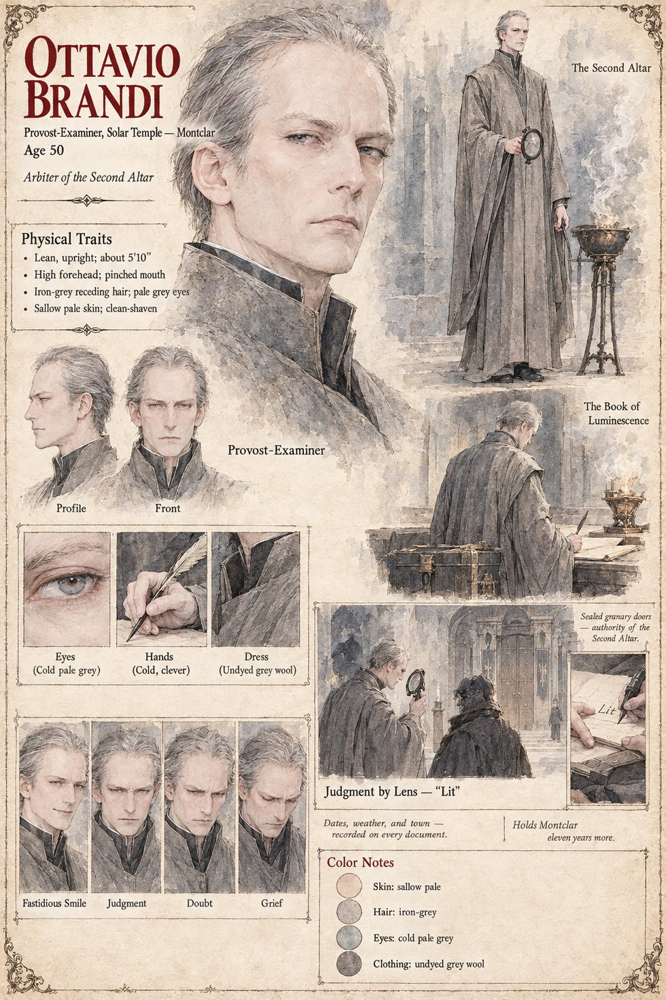

Ottavio Brandi
Provost-Examiner of the Solar Temple's chapter at Montclar · arbiter of the second altar, the Last Order · 50 years old
A lean, fastidiously dressed man of fifty in the undyed grey of the Last Order, with a high narrow forehead, a pinched mouth and a pair of cold clever hands, who arrives at Castelmaur on the twenty-sixth of Garren in a closed grey carriage with two clerks, a portable strongroom, a brazier he will not be parted from and a ground lens the thickness of a man's palm in a padded case on his knees. At the council of the three altars he proposes that all the grain of the valley, green or ripe, be reaped into the strongroom of the Solar Temple under seal and receipt, since what is ledgered cannot be eaten by an enemy that has no clerks. He asks the foreigner for the names of his swords, hears Yoake and Yoiyami, Daybreak and Evening Dark, the hour the light comes back and the hour it is spent, and enters in the margin of his own mind, as an accident of nomenclature and nothing more, that the stranger has a certain presence. He passes him the roll headed Works done under the Reading, under the maxim every novice copies forty times, the hand that signs must answer, and keeps the signature.
On the morning of the twenty-seventh of Havren he has the lens sent for before anyone has understood there is anything to judge, throws the sun through it onto the Dawn Wall, and sees, in the length of a held breath, that the wall is returning the beam rather than making any, as a polished basin returns a candle. An Examiner who writes his doubt into the margin of a Judgment has made himself the next thing the Judgment must be applied to; he says to the clerk with the pen, “Enter it. Lit.” On the twentieth of Iverin he reads the second line of his sister's letter, learns that his daughter died on the ninth of Garren, and goes down on the boards of his room in front of the brazier; in the morning he turns Arnaut's compromise paper face down on the newel-post and orders the granary sealed. He holds the chapter at Montclar eleven years more, never again enters a debt in the name of a feeling, writes the date, the weather and the name of the town at the head of every document that leaves his hand, and on every ninth of Garren rides four days south to read the evening office alone at the foot of the Dawn Wall, to no one, with nothing entered. He writes every week, beginning with the weather, to a girl who is dead; the Examiners who clear his desk find five hundred and seventy-two of the letters. The Book still says the Throat was lit.
“Credit is not a feeling, Hierarch. It is an entry.”
Appears In

Related Subjects


Related Records
![Sunrise in a gorge: a cliff face four hundred feet high covered ledge by ledge with dead red grasshoppers gripping the rock with wings spread, lit gold by the low sun, a bright beam from a great glass lens on a tripod on a plank platform under a grey awning falling on the wall, a dark-robed man and a pale young clerk at the lens, a red-robed man kneeling among kneeling peasants in the gravel, and in the foreground a lean man in a dark robe with a sword held down along his leg holding up one stiff red body beside a young woman with a braid in a white blouse and blue skirt who looks up, the gravel strewn with the dead](../images/scenes/the-dawn-wall-grid.jpg)
On the morning of the twenty-seventh of Havren the Dawn Wall hangs with the dead, and Tomobe no Higaide holds one up and says inago to Gersenda, while Ottavio Brandi and Matteo turn the ground lens on the wall and the Hierarch Odilo kneels in the gravel.